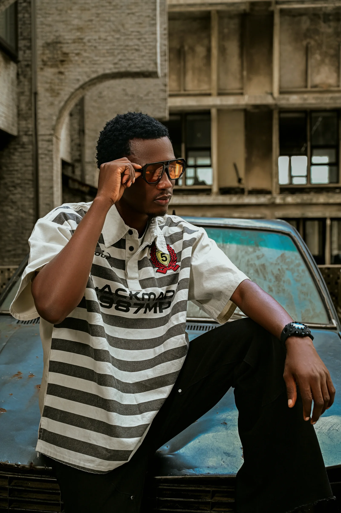
TBOY VISUALS — VISUAL ARCHIVE 003
LIFE
IN FRAMES.
AN ONGOING COLLECTION
The beauty of ordinary moments. Seen differently.
A collection of people, places, everyday moments and spontaneous visual stories.
SELECTED FRAMES
THE ARCHIVE / 003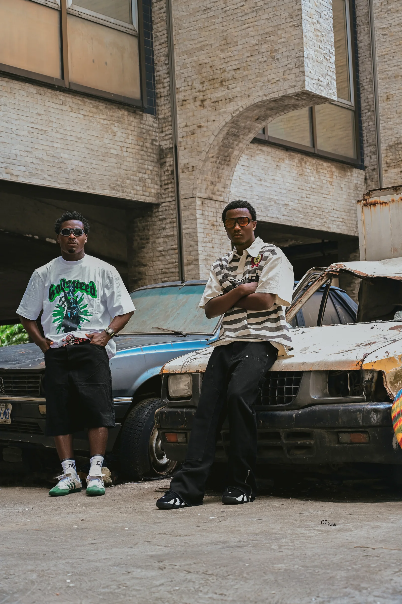
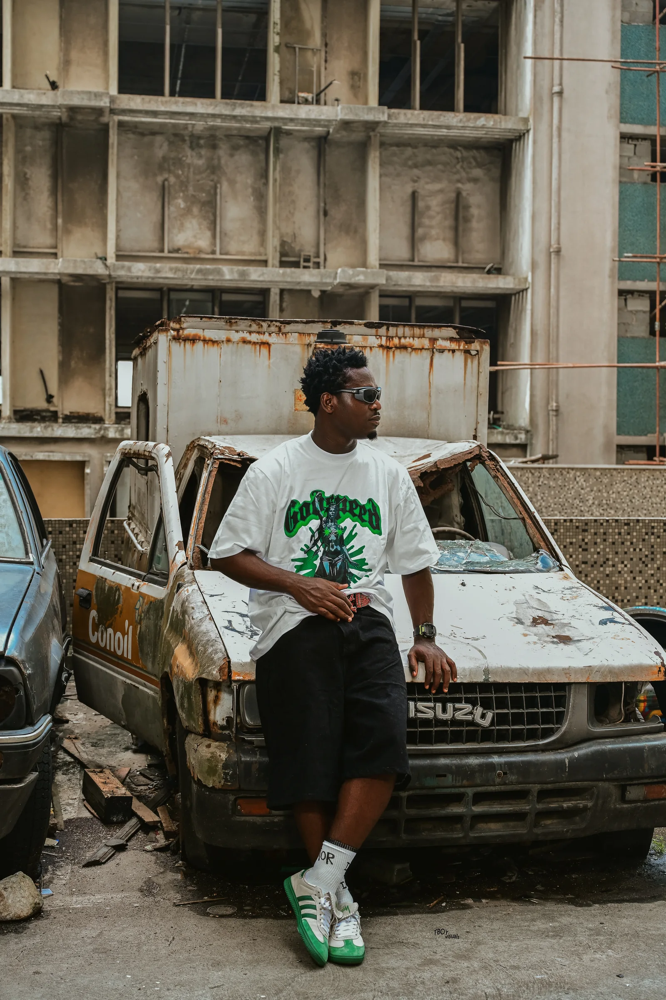
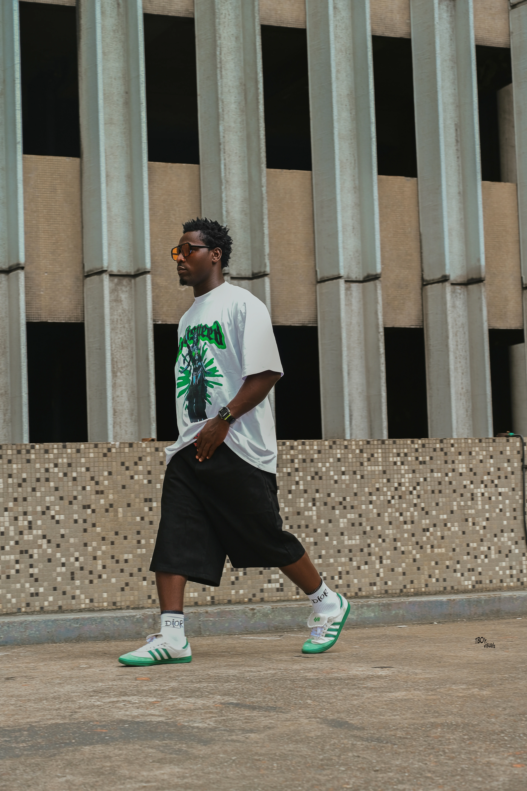
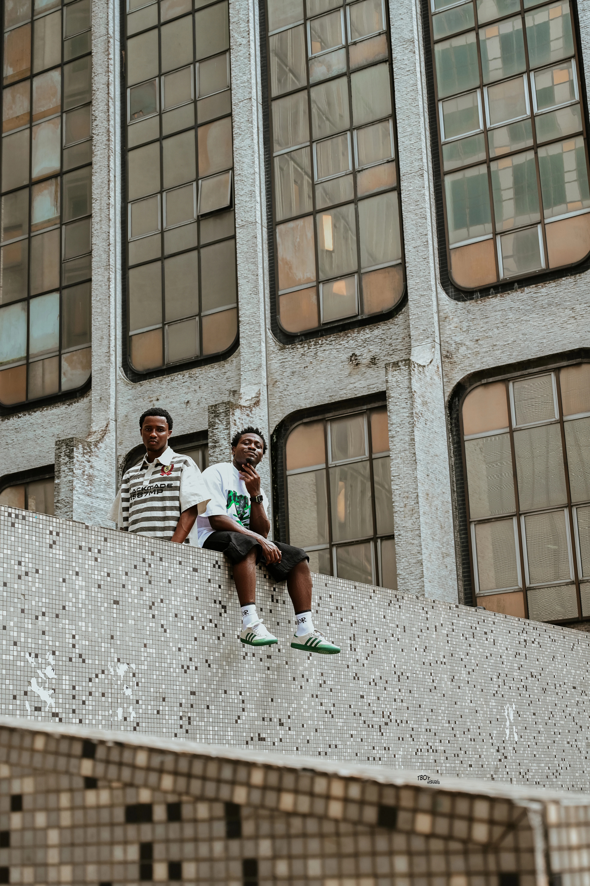
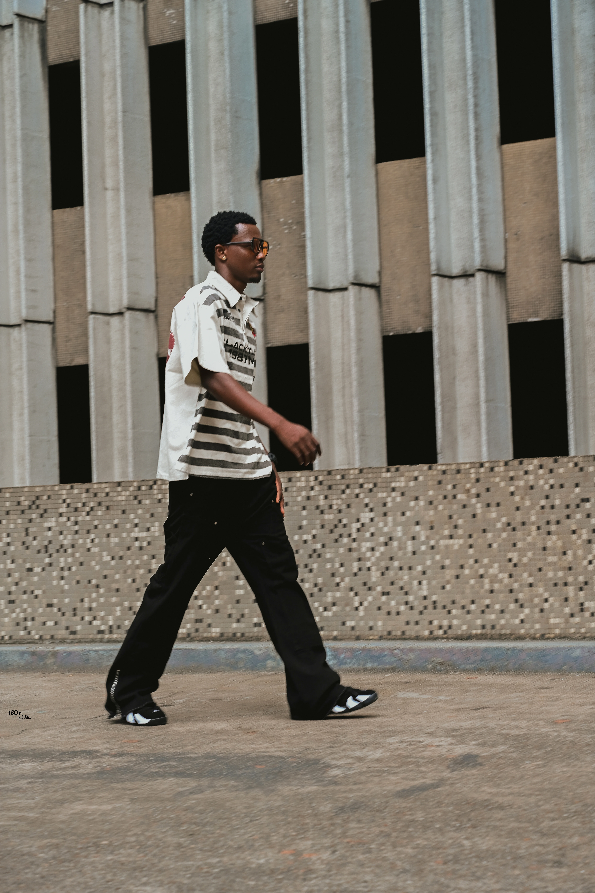
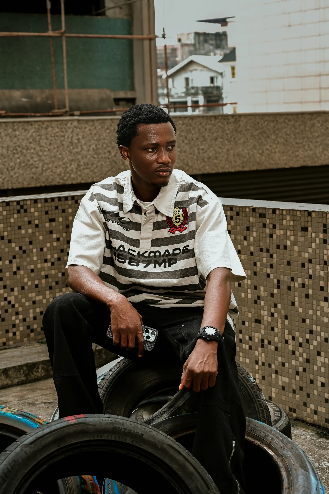
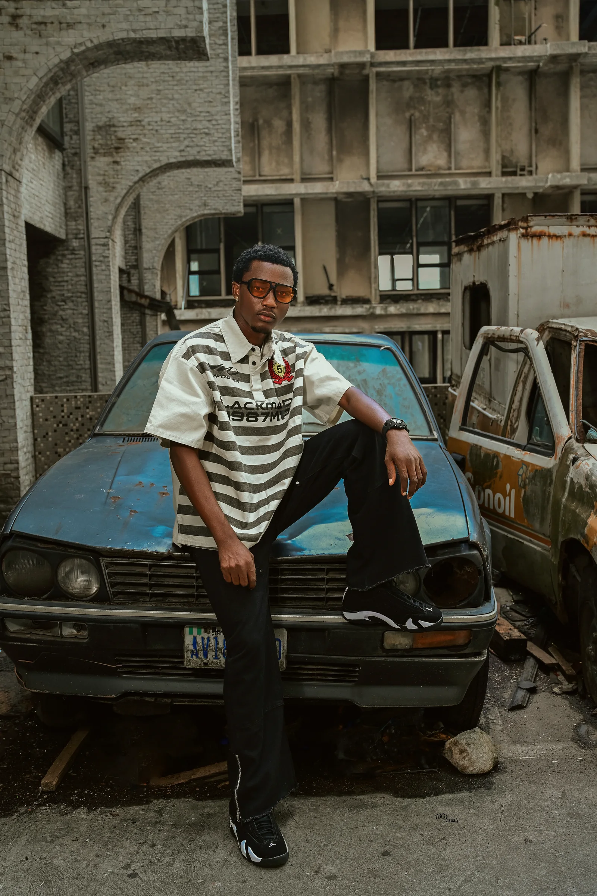
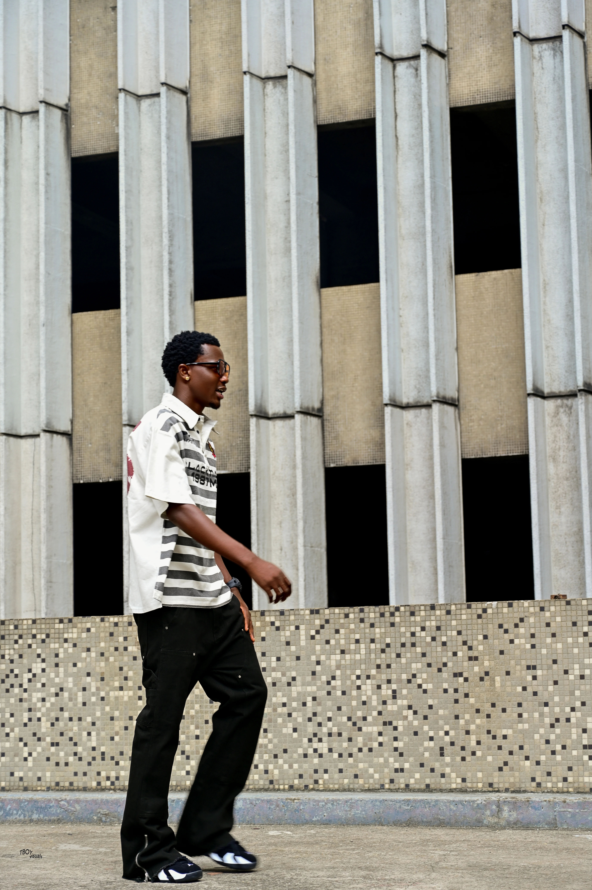
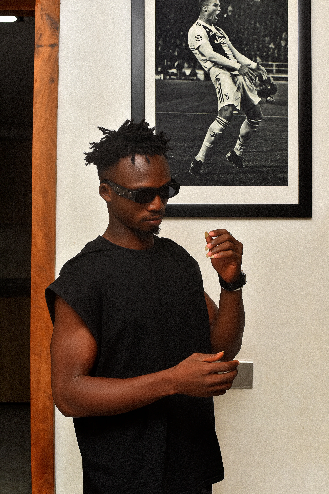
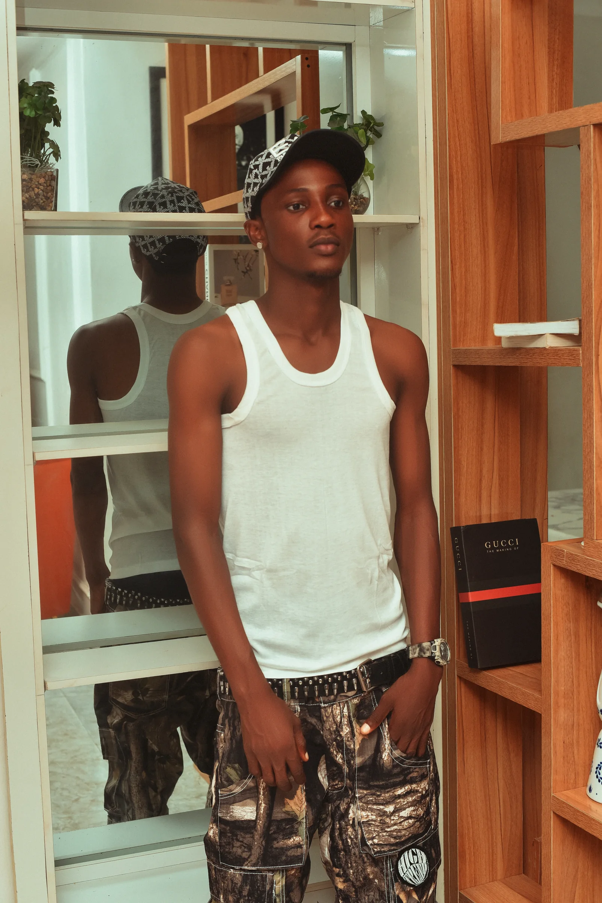
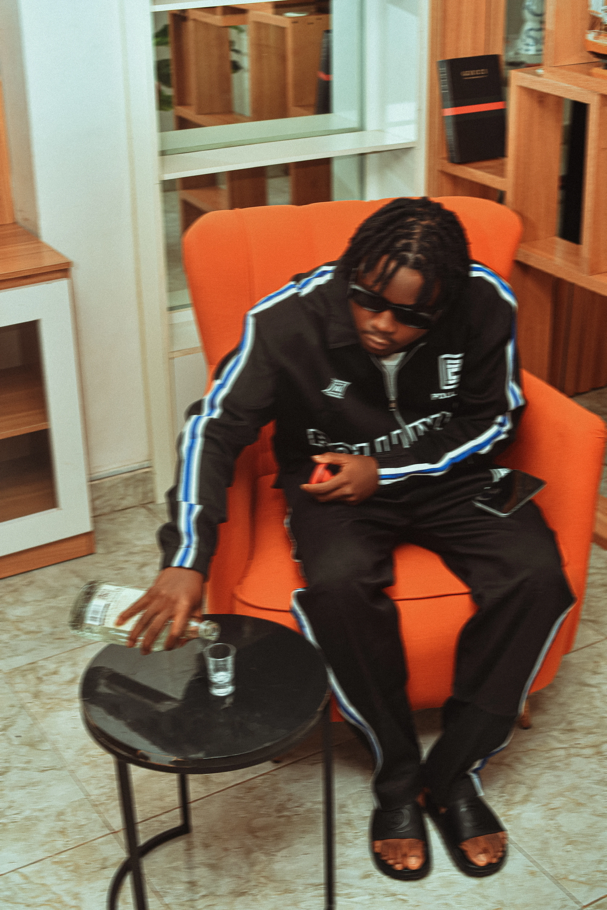
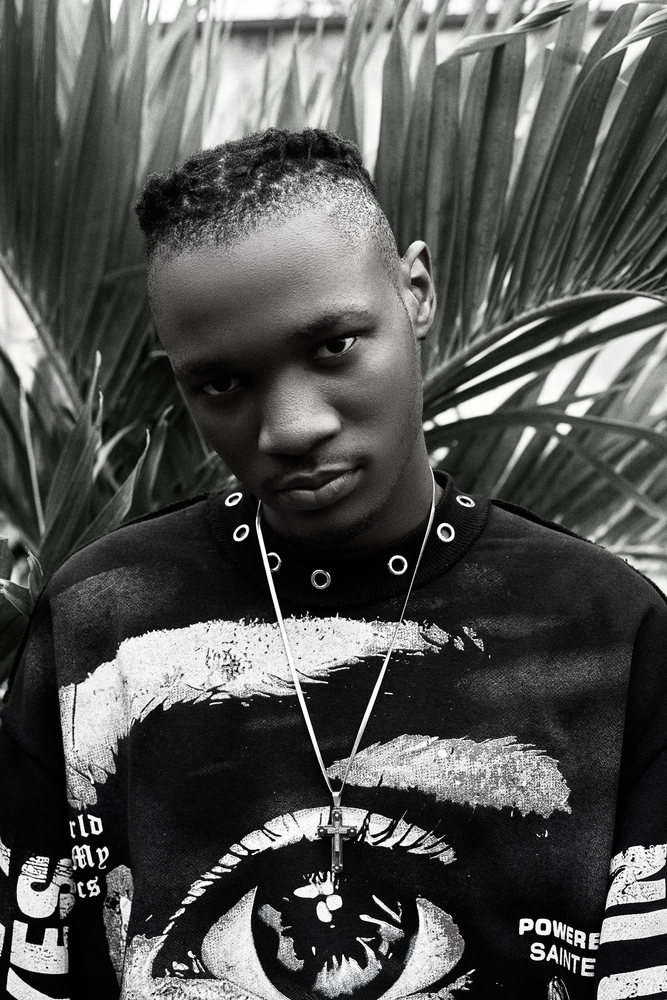